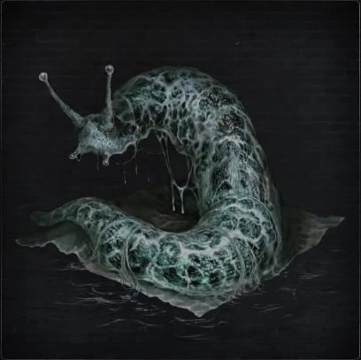
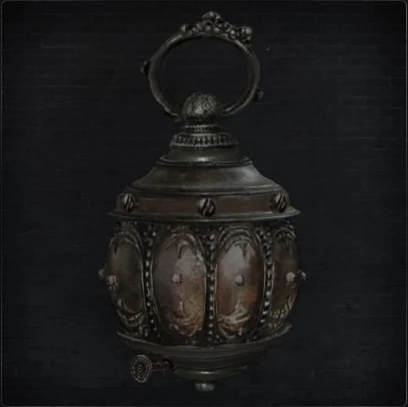
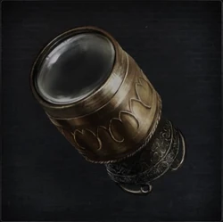
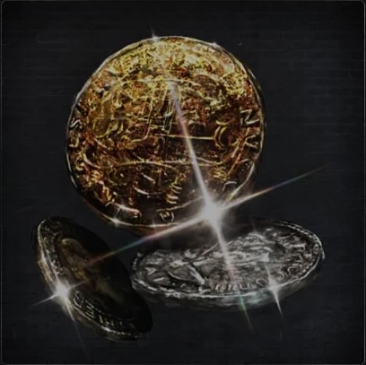

There are 5 total items considered Tools at the disposal of the hunters in Bloodborne.
| Item Name | Description | |
|---|---|---|
|  | Augur of Ebrietas | One of the secret rites of the Choir, high-ranking members of the Healing Church. Use spirits, the invertebrates known to be augurs of the Great Ones, to partially summon abandoned Ebrietas. One of the few rites that allow one to directly utilize the power of the Great Ones, and evidence that the Choir had approached the eldritch Truth. |
|  | Hand Lantern | Small portable lantern. This hunting accessory provides light while leaving both hands free to hold weapons. The torch, however, provides a stronger source of light. |
|  | Monocular | Monocular used to View things up close. Not a hunter's tool, but a simple antique, to be used as one sees fit. |
|  | Shining Coins | Various coins that are particularly luminous. There are very few uses for spare change during the hunt, but these will serve as guides through the darkness. Or, one could save them until morning, if it ever comes. |